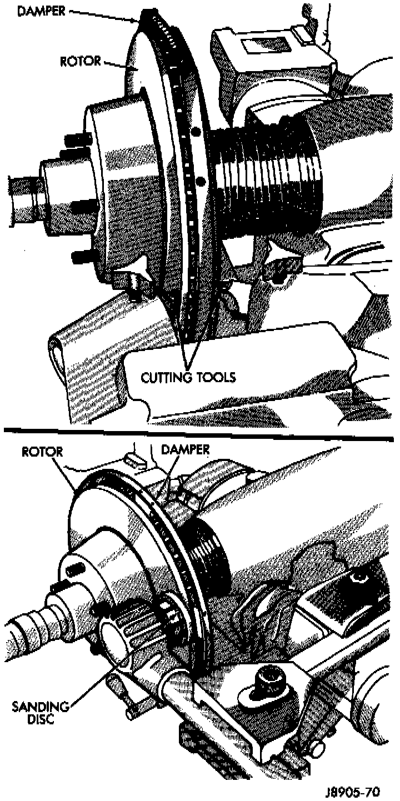

Rotor Refinishing
Fig 3 Rotor Refinishing Equipment:

Rotor braking surfaces can be sanded or machined in a disc brake lathe. The lathe must machine both sides of the rotor simultaneously with dual (two) cutter heads. Equipment capable of machining only one side at a time will produce a tapered rotor. The lathe should also be equipped with a grinder attachment or dual sanding discs for final cleanup or light refinishing. If the rotor surfaces only need minor cleanup of rust, scale, or minor scoring, use abrasive discs to clean up the rotor surfaces. However, when a rotor is scored or worn, machining with cutting tools will be required.
CAUTION: Do not machine the rotor if it will cause the rotor to fail below minimum allowable thickness.